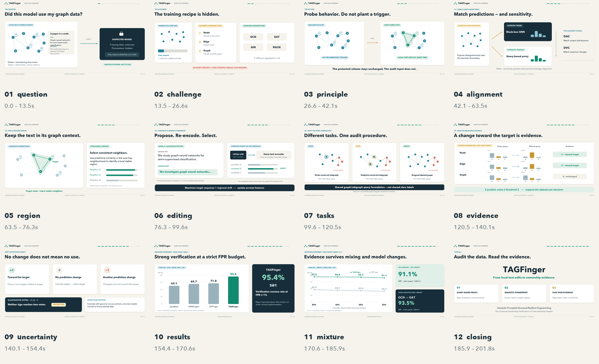

<!doctype html>
<html lang="zh-CN">
<meta charset="utf-8">
<meta name="viewport" content="width=device-width,initial-scale=1">
<title>TAGFinger · 新版研究介绍视频</title>
<style>
  * { box-sizing: border-box; }
  body { margin: 0; background: #f5f3ec; color: #172a35; font: 16px/1.7 system-ui,sans-serif; }
  main { max-width: 1180px; margin: 46px auto; padding: 0 24px 48px; }
  .eyebrow { color: #128a70; font-size: 13px; font-weight: 700; letter-spacing: .14em; }
  h1 { font-size: clamp(28px,4vw,45px); margin: 8px 0 12px; line-height: 1.25; }
  p { color: #6b7880; }
  video { display: block; width: 100%; border-radius: 16px; background: #172e3a;
    box-shadow: 0 10px 40px #172a3514; margin-top: 28px; }
  .links { display: flex; gap: 12px; flex-wrap: wrap; margin: 22px 0; }
  a { color: #237f9d; }
  .links a { border: 1px solid #dcddd5; background: white; padding: 8px 16px;
    border-radius: 8px; text-decoration: none; }
  .note { background: #e0f0e8; padding: 16px 20px; border-radius: 12px; color: #172a35; }
  h2 { margin-top: 36px; }
  .board { display: block; width: 100%; border: 1px solid #dcddd5; border-radius: 12px; }
</style>
<main>
  <div class="eyebrow">TAGFinger / ANONYMOUS RESEARCH OVERVIEW</div>
  <h1>从局部文本编辑，到数据所有权证据。</h1>
  <p>新版完整视频 · 英文合成旁白与内嵌字幕 · 1920 × 1080 · 12 个分镜</p>
  <video controls preload="metadata" poster="../images/TAGFinger_Overview_v2_poster.jpg">
    <source src="../images/TAGFinger_Overview_v2.mp4" type="video/mp4">
    你的浏览器不支持视频播放，请直接打开下方 MP4 文件。
  </video>
  <nav class="links">
    <a href="../images/TAGFinger_Overview_v2.mp4">打开新版 MP4</a>
    <a href="../images/TAGFinger_Overview.mp4">对照旧版视频</a>
    <a href="assets/TAGFinger_Overview_v2.srt">英文字幕 SRT</a>
    <a href="storyboard.json">旁白与分镜源稿</a>
  </nav>
  <div class="note">原理图、文本编辑和概率响应均为明确标注的示意；实验页对应正文表 1、3、4 的特定设置，不冒充当前代码新跑出的实验。</div>
  <h2>12 个分镜总览</h2>
  
</main>
</html>
